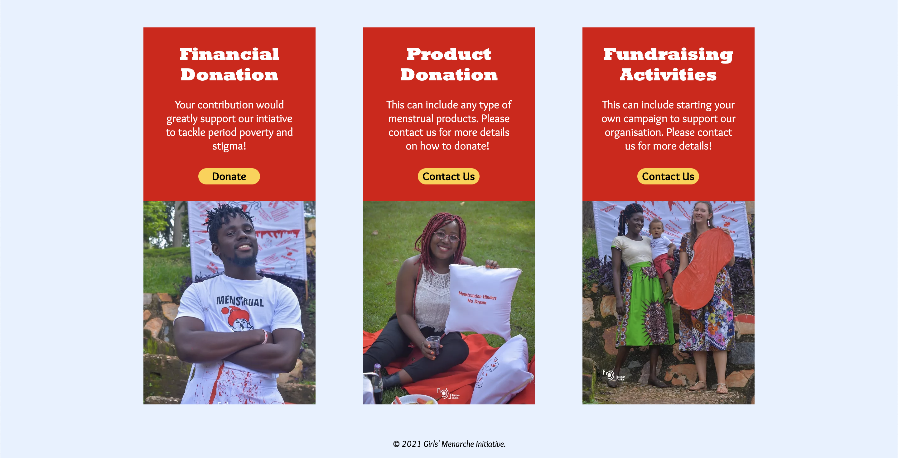

Recording of the website (above)
Two arcades built using the instructions on the arcade manual (below)

Girl's Menarche Initiative Website
Through our connection with Irise International, we met Sharitah Nakimuli, the founder of Girl's Menarche Initiative, an organisation committed to to providing sustainable menstrual health solutions to the communities of Uganda through menstrual product distribution, advocacy and education. We assisted with the design and deployment to launch the organisation's webite. They're a group of passionate advocates creating big changes in Uganda - please support them through reading more about their work and donating to their fundraising efforts.
Roles:
Website Design
Website Deployment (using WIX)